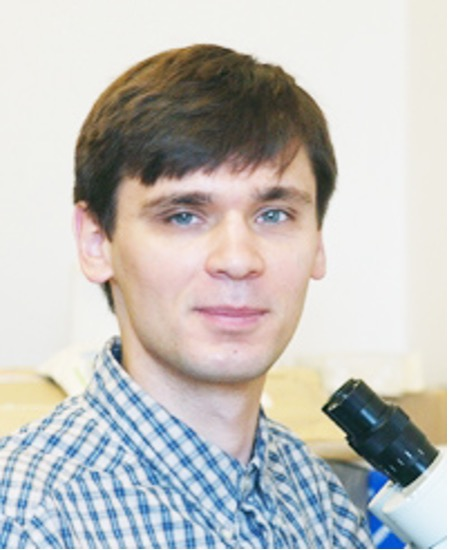

Qixin He is the Mary J. Elmore New Frontiers Assistant Professor in the Department of Biological Sciences at Purdue University. She received her Ph.D. in Ecology and Evolutionary Biology from the University of Michigan (advisor: Prof. L. Lacey Knowles), and was a postdoctoral scholar at the University of Chicago with Prof. Mercedes Pascual.
Her lab focuses on understanding how evolution structures population diversity across space and time. By combining testable theoretical models with empirical genomic and ecological data, the group addresses fundamental questions about parasite-pathogen coevolution, rapid adaptation, and demographic histories, with a primary focus on Plasmodium falciparum malaria and host–mite systems.
How does malaria maintain thousands of co-circulating strains — and why does drug resistance evolve so differently across transmission zones? Two interconnected questions, one eco-evolutionary framework.
Explore →A general framework linking within-host immunity and between-host transmission to predict how strain diversity accumulates and turns over — and what that means for long-term epidemic control.
Explore →Immune selection leaves readable signatures in genomic data that cluster around the very surfaces antibodies target. We decode those signals on protein structures to reveal what evolution tells us about immunity.
Explore →We study host-parasite range expansion in mammal-mites, allergen evolution in house dust mites and macroevolution of deep soil mites.
Explore →New R package from Broyles & He maps evolutionary signals onto 3D protein structures for vaccine and antigen research.
Mol Biol EvolTian et al. show ENSO teleconnections are a major driver of dengue outbreak risk globally.
Nature CommunicationsKlimov & He build the first global model of host switching in mites across 1,300+ mammal species.
Nature CommunicationsHe, Chaillet & Labbé explain why resistance to the same antimalarial rises and falls differently across transmission zones.
eLifeFola, He et al. use population genomics to map malaria transmission heterogeneity across Zambia.
Communications Medicinede Roos, He & Pascual develop a new epidemiological framework explaining chronic malaria exposure dynamics.
PNAS
We are recruiting. Prospective graduate students and postdocs welcome — contact heqixin(at)purdue(dot)edu.
* indicates corresponding author. Earlier publications and full list on Google Scholar.